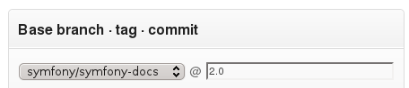

Contributing to the Documentation¶
Documentation is as important as code. It follows the exact same principles: DRY, tests, ease of maintenance, extensibility, optimization, and refactoring just to name a few. And of course, documentation has bugs, typos, hard to read tutorials, and more.
Contributing¶
Before contributing, you need to become familiar with the markup language used by the documentation.
The Symfony2 documentation is hosted on GitHub:
https://github.com/symfony/symfony-docs
If you want to submit a patch, fork the official repository on GitHub and then clone your fork:
$ git clone git://github.com/YOURUSERNAME/symfony-docs.git
Unless you’re documenting a feature that’s new to Symfony 2.1, you changes should be based on the 2.0 branch instead of the master branch. To do this checkout the 2.0 branch before the next step:
$ git checkout 2.0
Next, create a dedicated branch for your changes (for organization):
$ git checkout -b improving_foo_and_bar
You can now make your changes directly to this branch and commit them. When you’re done, push this branch to your GitHub fork and initiate a pull request. The pull request will be between your improving_foo_and_bar branch and the symfony-docs master branch.

If you have made your changes based on the 2.0 branch then you need to follow the change commit link and change the base branch to be @2.0:
GitHub covers the topic of pull requests in detail.
Note
The Symfony2 documentation is licensed under a Creative Commons Attribution-Share Alike 3.0 Unported License.
Reporting an Issue¶
The most easy contribution you can make is reporting issues: a typo, a grammar mistake, a bug in code example, a missing explanation, and so on.
Steps:
- Submit a bug in the bug tracker;
- (optional) Submit a patch.